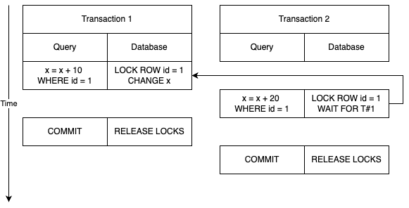

Бэкэнд для начинающих… и не только
Елифантьев Олег
Тензор, ведущий разработчик
Teamlead, full-stack
 oelifantiev
oelifantiev
…и не только
Тензор, ведущий разработчик
Teamlead, full-stack
oelifantiev
О каком бэкэнде речь: работа с данными, хранение, обработка, в т.ч. под нагрузкой.
Большинство идей рассмотрено на примере реляционной БД PostgreSQL (хотя некоторые проблемы актуальны и для NoSQL БД).
const User = define('User', {
email: { type: 'string' },
name: { type: 'string' }
})
const Topic = define('Topic', {
content: { type: 'string' },
viewCount: { type: 'integer' }
});
Topic.belongsTo(User)
const Emotion = define('Emotion', {
emoji: { type: 'string' }
});
Emotion.belongsTo(Topic)
Emotion.belongsTo(User)
Транзакция — группа операций с базой данных, которая может быть выполнена целиком (то есть атомарно) либо отменена.
Даже один запрос это по сути тоже транзакция, просто не явная.
Инвариант — некоторое утверждение о данных, которое остается неизменным на протяжении выполнения программы.
Обычно это бизнес-требования.
Примеры:
БД обеспечивает согласованность и выполнение тех инвариантов, о которых она знает!
Для того что бы согласованность достигалась, надо понятно "объяснять" БД, что вы хотите сделать.
Наше приложение:
Да, и не забывайте индексы на внешние ключи!
С ними одна морока! Ошибешься, и потом лови ошибки с прода что запись не создалась!©
Рассмотрим две задачи нашего приложения:
const emoji = await Emotion.findOne({
user_id: current_user_id,
topic_id: current_topic_id
});
if (!emoji) {
Emotion.add({ ... })
}
А что вы будете делать при конкурентных запросах?
Уникальный индекс на пару (user_id, topic_id)
При попытке вставить дубль — исключение
Можно использовать ON CONFLICT DO NOTHING и избавиться от исключения
Важны в первую очередь инварианты. Индексы — лишь одно из средств.
Нельзя просто "обмазать все индексами" — может стать только хуже.
Большой количество индексов влияет на вставку данных в таблицу, замедляет ее, имейте это ввиду. Кроме того, индексы занимают место на диске (иногда больше, чем сами данные)
Задача: счетчик просмотров
const topic = await Topic.findOne({ topic_id: id });
topic.viewCount++;
topic.save();
UPDATE Topic
SET viewCount = viewCount + 1
WHERE id = $1
В ORM обычно есть аналоги!
Транзакция — группа операций с базой данных, которая может быть завершена целиком либо отменена.
В идеале: пока не завершилась — ни на кого не влияет и не видит, что делают другие.
На деле все сложнее…
* — в PostgreSQL в принципе не возможно, но для понимания картины стоит упомянуть
| Транзакция 1 | Транзакция 2 |
|---|---|
| UPDATE x SET y = y + 10 WHERE z = 1 |
UPDATE x SET y = y + 20 WHERE z = 1 |
Результат: x увеличился на 10 или на 20, как повезет, но не на 30
| Транзакция 1 | Транзакция 2 |
|---|---|
| UPDATE x SET y = 10 WHERE z = 1 | |
| SELECT y FROM x WHERE z = 1; | |
| ROLLBACK |
Результат: транзакция 2 думает, что y = 10, но это не так
| Транзакция 1 | Транзакция 2 |
|---|---|
| SELECT y FROM x WHERE z = 1; | |
| UPDATE x SET y = 10 WHERE z = 1 | |
| COMMIT | |
| SELECT y FROM x WHERE z = 1; |
В транзакции 2 y сперва имеет какое-то начальное значение, затем = 10 (т.к. первая транзакция завершилась)
| Транзакция 1 | Транзакция 2 |
|---|---|
| SELECT COUNT(id) FROM x | |
| INSERT INTO x VALUES (…) | |
| COMMIT | |
| SELECT COUNT(id) FROM x |
Количество будет отличаться. Первая транзакция увидела новые записи, которые вставила вторая
| Уровень изоляции | Фантомное чтение | Неповторяющееся чтение | Грязное чтение |
|---|---|---|---|
| Serializable | ✅ | ✅ | ✅ |
| Repeatable read | ❌ | ✅ | ✅ |
| Read committed | ❌ | ❌ | ✅ |
Почему они не страдают от артефакта "потерянное обновление"?
UPDATE устанавливает блокировку строки

const countOnDuty = await Duty.findAll({ shift_id: 10 });
if (countOnDuty.length > 1) {
Duty.remove({ shift_id: 10, person_id: 15 });
}
SELECT … FOR UPDATE
const countOnDuty = await Duty
.findAll({ shift_id: 10 })
.forUpdate();
if (countOnDuty.length > 1) {
Duty.remove({ shift_id: 10, person_id: 15 });
}
Transaction.begin(async () => {
const countOnDuty = await Duty
.findAll({ shift_id: 10 })
.forUpdate();
if (countOnDuty.length > 1) {
await Duty.remove({ shift_id: 10, person_id: 15 });
}
Блокировки записей могут привести к взаимоблокировкам (deadlock) параллельных процессов
Пример: из внешней системы выгружается количество просмотров постов форума, получаем пары (topic_id, view_count)
Работаем в транзакции, применяем атомарные операции, выполняем для каждой входящей пары запрос:
UPDATE Topic
SET viewСount = viewСount + $1
WHERE id = $2
Елифантьев Олег
Тензор, ведущий разработчик
Teamlead, full-stack
oelifantiev